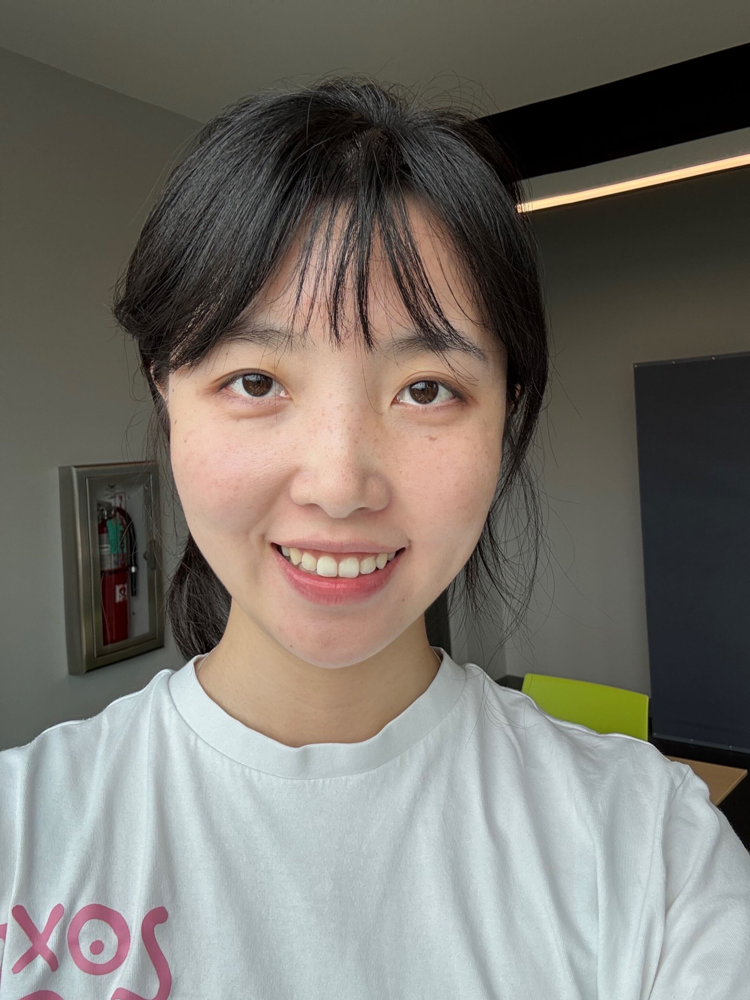
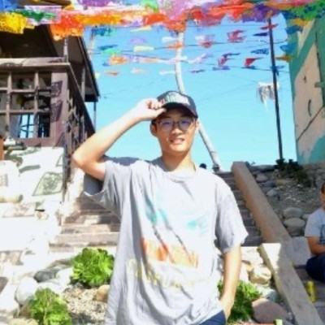
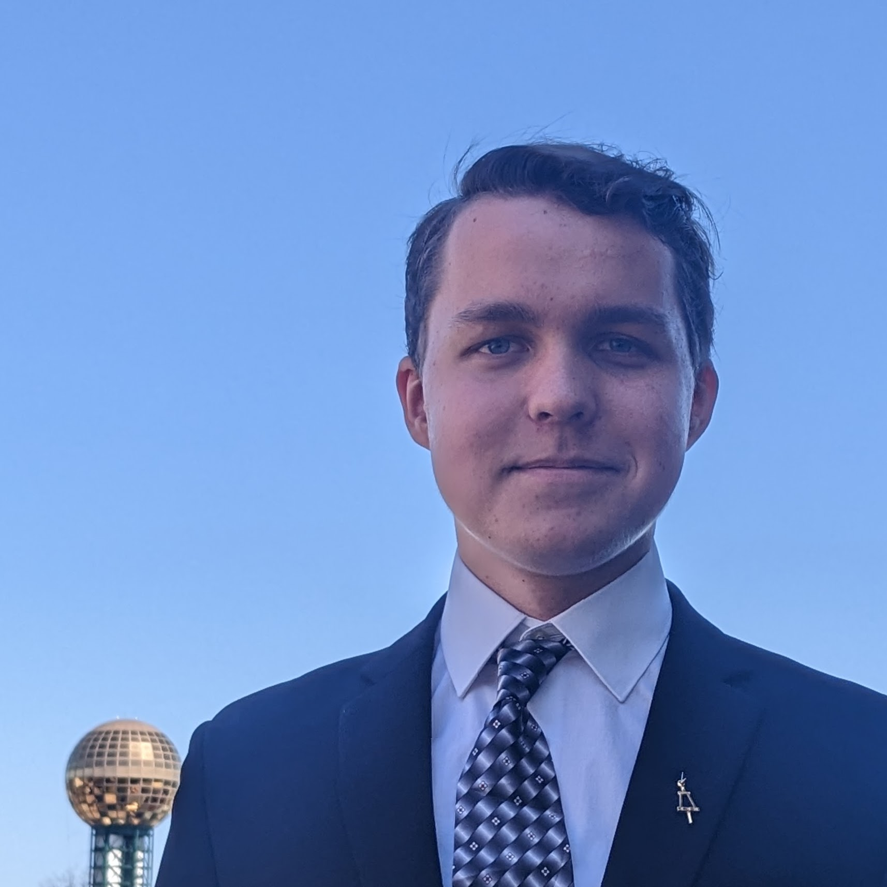
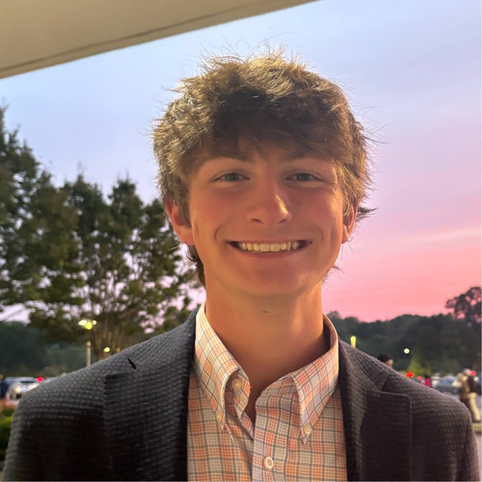

Farong Wang
PhD student · Fall 2025
MS, Johns Hopkins University, 2025
AURAS Lab · UT Knoxville
Our researchers work across robotics, embodied intelligence, physical simulation, and biomedical applications.

PhD student · Fall 2025
MS, Johns Hopkins University, 2025

PhD student · Fall 2025
MS, University of California San Diego, 2025
PhD student · Spring 2026
MS, Karlsruhe Institute of Technology, 2025

PhD student · Fall 2026
MS, UTK

Undergraduate student
Second-year Computer Science student, EECS, UTK